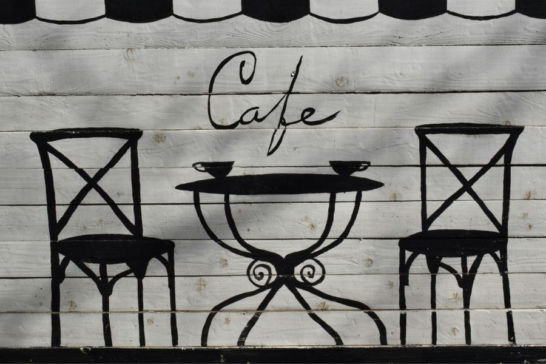

Welcome
Ube & Alfajor Café is a small neighborhood shop where two grandmothers’ recipe boxes finally met. One side of our menu leans into the purple, creamy comfort of Filipino ube desserts. The other side brings the buttery, dulce de leche–filled cookies of Argentina. Together, they make a menu you will not find anywhere else in town.

What Makes Us Different
Every drink starts with real ube halaya, made in-house from purple yam — never a powder mix. Every alfajor is baked fresh daily and filled with slow-cooked dulce de leche. It is a small menu, but everything on it is made with care.